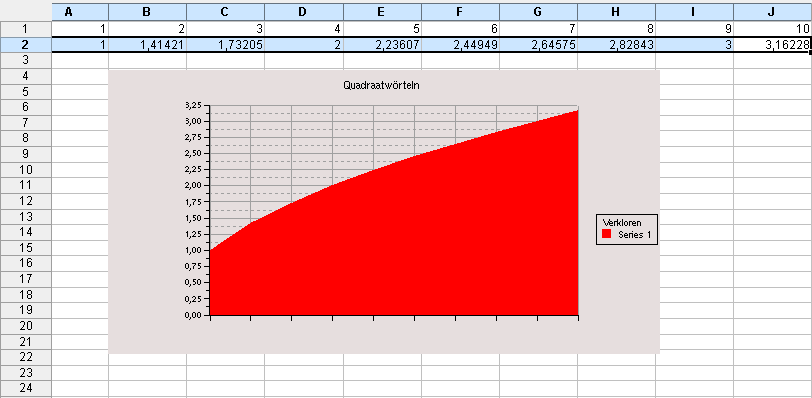
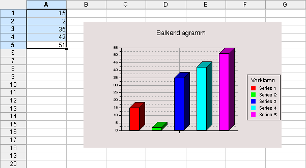

KChart lett sik nich bloots as Enkelprogramm, sünnern ok tosamen mit KSpread bruken. Disse Afsnitt verklort, wodennig sik Diagrammen binnen KSpread opstellen un ännern laat.
Beacht, dat KChart, na KSpread inbett, en faken bruukt un goot inbuut Funkschoon is. De nakamen Bispillen schöölt Di den Start lichter maken.
Wenn Du en Diagramm mit KSpread opstellt hest, kannst Du mit en Dubbelklick op dat Diagramm all Funkschonen vun KChart bruken. So laat sik ok all verwiedert Instellenfunkschonen opropen. Beacht, dat de Dateneditor nich verföögbor is, wenn KChart na KSpread inbett is. Dit is ok kloor, wiel KSpread, tominnst ut de Sicht vun KChart, deDaten praatstellt.
Bi't Arbeiden mit KSpread is mennigmaal de Tuusch vun X un Y intressant. Du kannst de Dorstellen vun de X- un Y-Assen in KChart in de Instellen för dat Datenformaat tuschen. Se laat sik in't Menü "Bewerken" oder mit en Rechtsklick op dat Diagramm opropen. As al baven seggt, muttst Du binnen de KChart-Komponent wesen, wenn Du op disse Instellen togriepen wullt. Dor kummst Du mit en Dubbelklick op dat inbett Diagram binnen dat Datenblatt hen.
So lett sik mit KChart plotten, wenn dat binnen KSpread inbett is:

Markeer de twete Reeg vun Tallen.
Nu op den Diagramm-Knoop klicken, denn warrt dat Diagramm opstellt.
Söök ut den Diagrammhölper de nödigen Optschonen ut. De Hölper dukt op, nadeem Du dat Diagramm infögt hest.
All Daten laat sik ok mit twee Striepen ansteed vun twee Regen opstellen. Wenn Du Striepen bruukst, wullt Du villicht de X- un Y-Assen in de KChart-Instellen tuschen, as dat al baven beschreven wöör.
Wenn Du en Balkendiagramm för egen Indrääg opstellen wullt, giff de Tallen binnen en Striep in, as nerrn to sehn.

De Utrichten vun de Tallen leggt fast, wodennig dat Plottbild opstellt warrt.
En Tall vun Regen leggt de Y-Koordinaten för en Plottbild fast.
En Striep vun Tallen leggt de Hööchden för elk Balken in en Balkendiagramm fast. He gifft ok de Grött vun de Delen binnen en Kokendiagramm an.


Wullt Du wat to disse Siet seggen oder ehr verbetern?
Denn stüer Dien Vörslääg to den KDE-Dokmentatschoonkoppel!